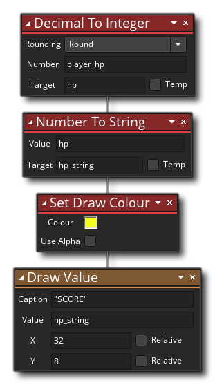

Beschreibung
Diese Aktion nimmt eine Dezimalzahl an und konvertiert sie in eine Ganzzahl. Sie geben den zu konvertierenden Wert an und wählen dann die Art der Rundung aus, die durchgeführt werden soll, um sie in einen Integrierwert umzuwandeln. Die verfügbaren Rundungsarten sind:
- Round: Dies nimmt eine Dezimalzahl und rundet sie auf die nächste Ganzzahl auf oder ab. In dem speziellen Fall, in dem die angegebene Zahl genau eine halbe Ganzzahl ist (z. B. 1,5, 17,5, -2,5 usw.), wird die Zahl auf den nächsten geraden Wert gerundet, z. B. wird 2,5 auf 2 gerundet. während 3,5 würde auf 4 gerundet werden. Diese Art der Rundung wird Banker Rundung und über eine große Anzahl von Iterationen oder bei der Verwendung von Fließkomma-Mathematik genannt, gibt es eine statistisch bessere Rundung als die traditionellere Runden wenn über.5 und Abrunden sonst " Ansatz.
- Ceil: Dies wird ein Dezimalwert nehmen und um es auf die nächste ganze Zahl auf. Im Gegensatz zu Runde (oben) berücksichtigt dies nicht den Dezimalteil des Werts, so dass eine Zahl wie 5.0000001 immer noch auf 6 aufgerundet wird. Es ist erwähnenswert, dass wenn Sie die Random-Aktion Random Number verwenden, eine Zufallszahl generiert Dezimalwert und dann Aufruf dieser Aktion, um es aufzurunden, dann können Sie unerwartete Ergebnisse erhalten. Die zufällige Aktion könnte möglicherweise 0 zurückgeben, und die Verwendung von "Ceil" ergibt nicht 1, sondern 0. Wenn Sie also eine zufällige Dezimalzahl von 0 bis 9 erhalten und diese Funktion verwenden, können Sie ganze Zahlen von 1 bis 10 erwarten Realität könnte man ganze Zahlen von 0 bis 10 bekommen. Dies ist eine entfernte Möglichkeit, sollte aber bei der Verwendung dieser Aktion berücksichtigt werden.
- Etage: Dies wird einen Dezimalwert nehmen und um es auf die nächste ganze Zahl. Im Gegensatz zu runder (oben) berücksichtigt dies nicht den Dezimalteil des Werts, sodass eine Zahl wie 5,9999999 immer noch auf 5 reduziert ist.
Nachdem Sie den Rundungstyp ausgewählt haben, müssen Sie die zu runde Zahl angeben (dies kann eine Variable sein) und dann eine Zielvariable angeben, die den neuen Ganzzahlwert zurückgibt (der als temporäre lokale Variable gekennzeichnet werden kann).
Aktionssyntax:

Argumente:
Streit Beschreibung Rounding Die Art der Rundung, die verwendet werden soll, um die ganze Zahl zu erhalten (siehe obige Beschreibung) Number Die Dezimalzahl zum Runden auf eine ganze Zahl Target Die Zielvariable zum Speichern der zurückgegebenen Ganzzahl
Beispiel:
Der obige Aktionsblockcode nimmt einen Dezimalwert und konvertiert ihn in eine Ganzzahl, wobei der zurückgegebene Wert in einer temporären lokalen Variablen gespeichert wird. Dieser Wert wird dann in eine Zeichenfolge umgewandelt und auf den Bildschirm gezeichnet.